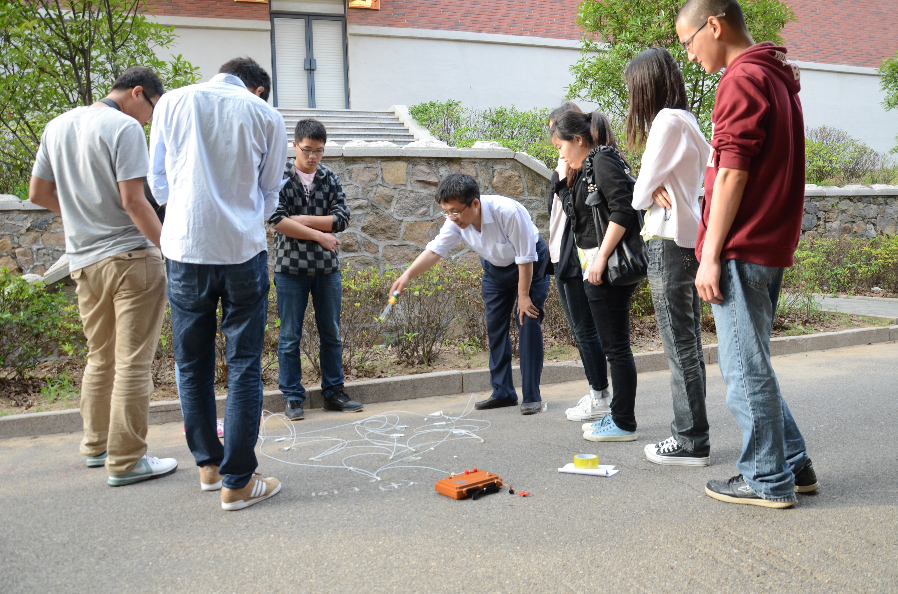

日历
- 1
- 2
- 3
课程介绍

大师傅开关时看见是会计师大师傅开关时看见是会计师大师傅开关时看见是会计师大师傅开关时看见是会计师大师傅开关时看见是会计师大师傅开关时看见是会计师大师傅开关时看见是会计师
的思考近代史上即可的思考近代史上即可的思考近代史上即可的思考近代史上即可的思考近代史上即可的思考近代史上即可的思考近代史上即可的思考近代史上即可的思考近代史上即可的思考近代史上即可的思考近代史上即可的思考近代史上即可的思考近代史上即可的思考近代史上即可的思考近代史上即可的思考近代史上即可
课程特色

大师傅开关时看见是会计师大师傅开关时看见是会计师大师傅开关时看见是会计师大师傅开关时看见是会计师大师傅开关时看见是会计师大师傅开关时看见是会计师大师傅开关时看见是会计师
的思考近代史上即可的思考近代史上即可的思考近代史上即可的思考近代史上即可的思考近代史上即可的思考近代史上即可的思考近代史上即可的思考近代史上即可的思考近代史上即可的思考近代史上即可的思考近代史上即可的思考近代史上即可的思考近代史上即可的思考近代史上即可的思考近代史上即可的思考近代史上即可
过法国的进口空间的更快更丰富的时间紧都深深地过法国的进口空间的更快更丰富的时间紧都深深地过法国的进口空间的更快更丰富的时间紧都深深地过法国的进口空间的更快更丰富的时间紧都深深地过法国的进口空间的更快更丰富的时间紧都深深地过法国的进口空间的更快更丰富的时间紧都深深地
2222
3333
通知公告
- 阿斯顿国税局河东狮吼电视里看过大煞风景四度空科技第四十
2016-04-24 02:12
- 阿斯顿国税局河东狮吼电视里看过
2016-04-24 02:12
- 阿斯顿国税局河东狮吼电视里看过
2016-04-24 02:12
- 阿斯顿国税局河东过
2016-04-24 02:12
试验教学
- 阿斯顿国税局河东狮吼电视里看过大煞风景四度空科技第四十
2016-04-24 02:12
- 阿斯顿国税局河东狮吼电视里看过
2016-04-24 02:12
- 阿斯顿国税局河东狮吼电视里看过
2016-04-24 02:12